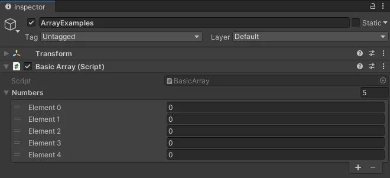

Prefabs allow you to store a GameObject and its information (including its components, property values, child objects, etc.) into your Unity project folder as a reusable Asset.
This Prefab Asset can be used as a base template from which you can create and modify new Prefab instances in the scene.
How to create a Prefab from an existing GameObject in the scene
Click and drag the GameObject from the Scene Hierarchy into your project folder panel.
The GameObject should now be marked with a blue icon, and have an arrow button to the right of its name that leads you to the Prefab editor.
How to Instantiate a GameObject
We use the Instantiate() method function to spawn new instances of a GameObject in our scene.
Instantiate(someGameObject);
You could also pass a GameObject instance into a GameObject variable. This allows you to reference it later in your script.
GameObject obj = Instantiate(someGameObject);
//let's say we want to change the position of this instance
obj.transform.position = someVector;
//or set it to a new parent
obj.transform.parent = someParentObject;
The Instantiate() method can also be called in other ways that allow you to pass multiple parameters at once.
The Unity Scripting API lists all the different ways you can declare the Instantiate() function.
Every array has a Length property, which gives you the number elements in the array.
string[] fruits = {"apples", "pears", "oranges"};
Debug.Log("Length of fruits array: "+ fruits.Length);
// console will print "Length of fruits array: 3".
Arrays cannot be resized while the project is running. If you need to resize a container of objects, either recreate the array to resize it, or use a List instead.
How to declare an array
Declare the type of variable that is being stored in the array, followed by square brackets [] .
float[] someFloats; // a private float array
private Transform[] someTransforms; // a private Transform array
public Vector3[] someVectors; // a public Vector3 array
[SerializeField] GameObject[] someGameObjects; // a private GameObject array that is visible in the Inspector.
You can initialise the array by:
using an array constructor method in your scripts;
// Creates an array with 5 empty elements
int[] numbers = new int[5];
// Initialises array with elements
numbers = {1, 2, 3, 4, 5};
//OR declare and initialise at once
int[] numbers = new int[] {1,2,3,4,5};
storing elements in the Inspector, if your array is either public OR private with a [SerializeField] attribute;

using a method that sets the contents of an array
//stores all GameObjects in the scene with tag "Respawn" into the array
GameObject[] respawns = GameObject.FindGameObjectsWithTag("Respawn");
In-class exercise
Write a script that instantiates multiple prefabs that are:
chosen at random from an array; AND
each set at a random position within a given scope. (i.e. nothing should be "out of bounds", OR objects should only spawn at very specific positions.)